Thank you for purchasing my theme. If you have any questions that are beyond the scope of this help file, please feel free to email via my user page contact form here . Thanks so much!
Before setting up the project, you should have a basic understanding of the following: Html, Css, Javascript, Next.js, Node.js, npm. For more information about the above topics, you can visit the following links: HTML CSS Javascript React Next.js Node.js npm
The project is built with the following versions:
Node.js:
Version
24 or higher
is required to run the project.
[Node.js Official Site]
Next.js:
The project is built with
Next.js 16.
[Next.js Official Site]
npm:
Version
11
was used for dependency management.
[npm Official Site]
Please ensure your development environment matches these versions for optimal compatibility and performance.
To check your installed versions, run:
node -v
,
npm -v
,
npx next -v
in your terminal.
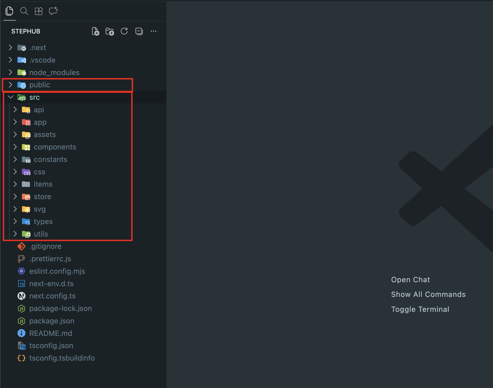
Your computer should have Node.js and npm installed to manage the dependencies. You can download Node.js (which includes npm) from the following link: Node.js
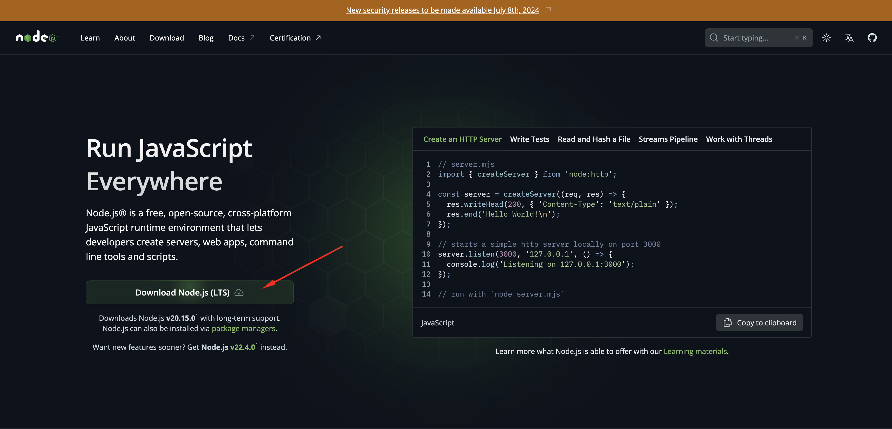
Open the project in a code editor like VS Code (free editor:
https://code.visualstudio.com/
), then install the dependencies by running the following command in
the project directory:
npm install
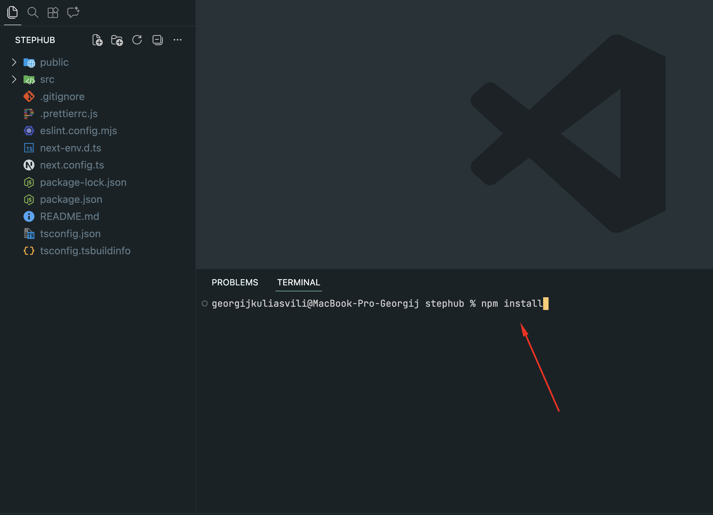
The project contains only one local asset file located at
src/assets/01.png
. All other images are loaded via external URLs and are defined within
the Next.js
Image
component.
To change any image, simply replace the URL in the corresponding
Image
component with your own image link. This approach allows for easy
customization without modifying local files.
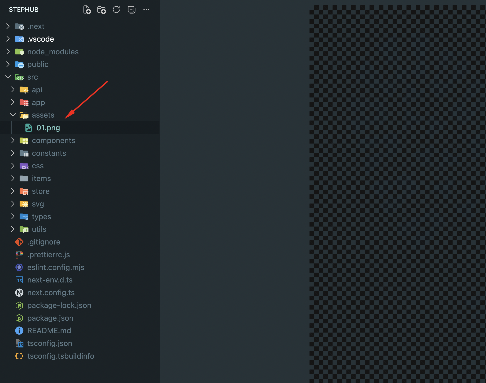
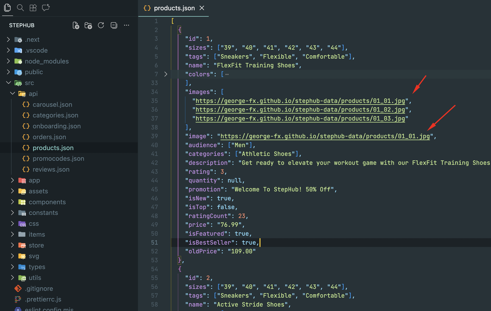
The project uses CSS for styling. Global styles and variables are
located in the
src/css
folder.
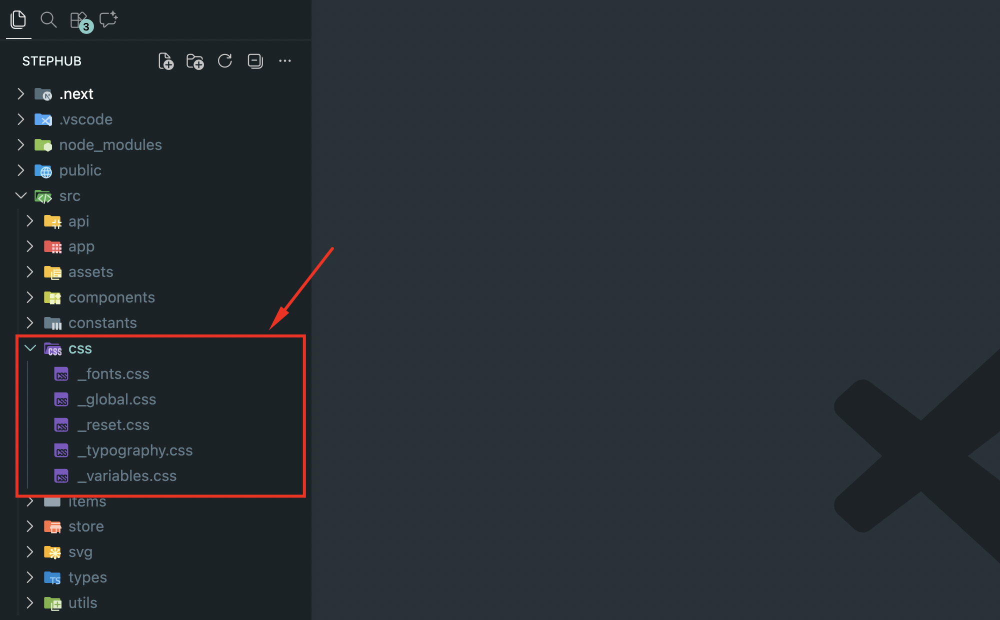
To customize colors, fonts, and other design tokens, edit the CSS variables in the corresponding files. Changes will be automatically reflected throughout the application.
Additionally, each screen in the
src/app
folder has its own dedicated CSS file, allowing you to customize the
appearance of individual screens independently.
To run the project, use the following command:
npm run dev
This will start the development server, and you can view the app in
your browser at
http://localhost:3000
. The development server supports hot reloading, so any changes you
make to the code will automatically refresh the page to reflect those
changes.
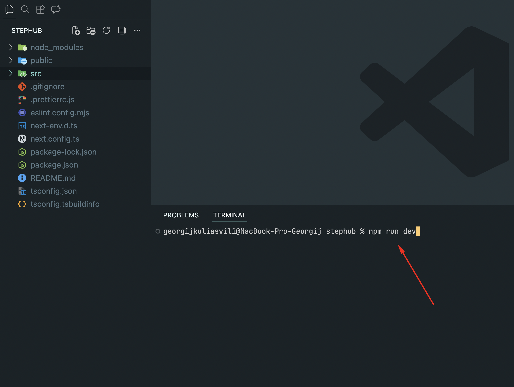
To build the project, use the following command:
npm run build
You can find more information on Next.js production builds in the
Next.js documentation:
Next.js Production Builds
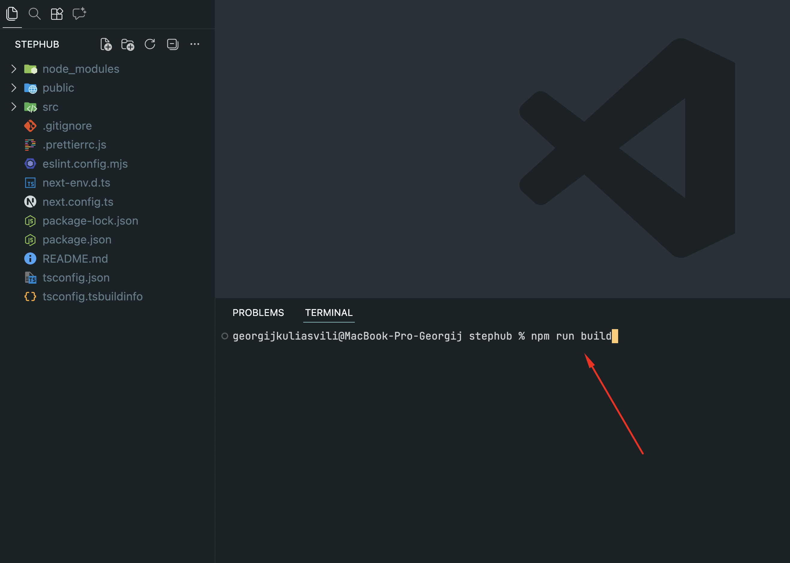
After running the build command, all build files will be located in
the
.next
folder. For deployment, move the contents of the
.next
folder to your server.
You can deploy
managed Next.js with Vercel
, or self-host on a Node.js server, Docker image, or even static HTML
files.
You can find more information on Next.js deployment in the Next.js
documentation:
Next.js Deployment
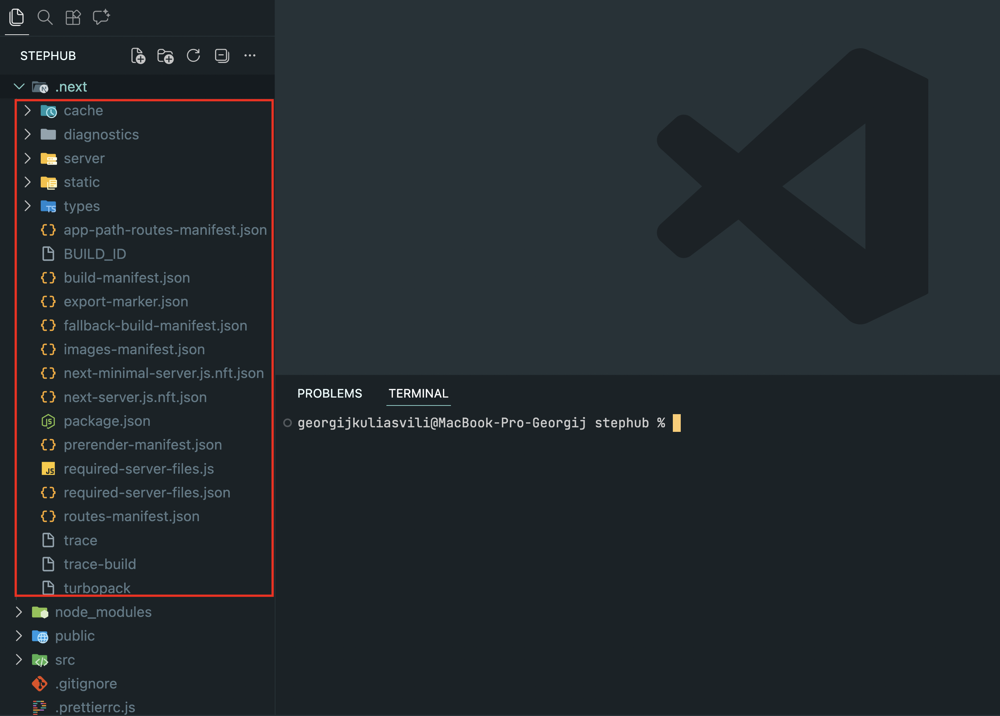
By default, the application uses 7 main JSON files located in
src/api
:
These are just static files and there are no real API requests to a server. The application reads data directly from these JSON files. You can modify or extend them as needed for your project. In a production environment, you may replace them with real API endpoints.
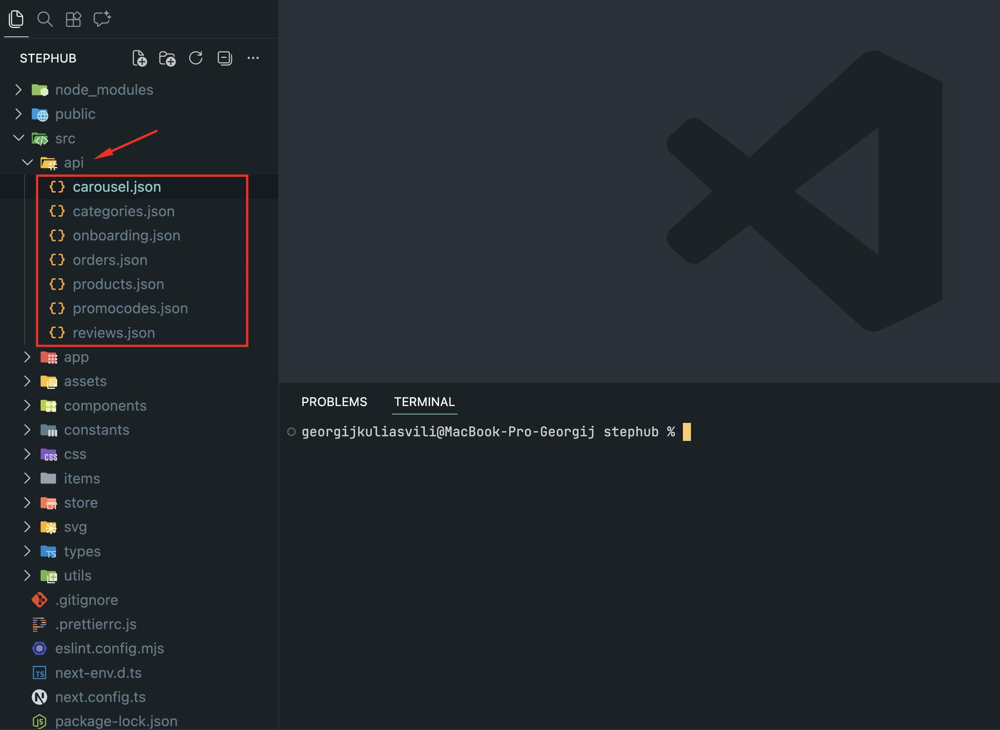
To use real data instead of mock JSON files, create reusable API helpers in React and fetch data with hooks. This keeps components clean and allows easy switching to real REST endpoints.
Steps:
1. Create an API module, e.g.
src/api/apiClient.tsx
or
src/api/api.tsx
.
2. Write fetch functions for each dataset:
getCarousel()
,
getCategories()
,
getProducts()
,
getOrders()
,
getReviews()
,
getPromocodes()
.
3. In components, load data with
useEffect
+
useState
or Redux/RTK Query, and replace mock JSON usage.
Example API helper (fetch from endpoint):
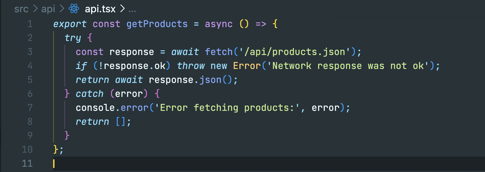
Example use in component:
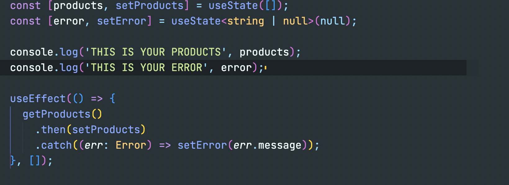
If you have any questions or need support, please contact me via
email:
kul.giorgi@gmail.com
The project uses the following dependencies:
The project uses the following font:
Version 1.0.0 – Initial Release (March 20, 2026)
- 40+ mobile-ready screens included
- Fully responsive and optimized UI
- Product listing and product details pages
- Cart and checkout functionality
- Promo code support
- Order history and user account management
- Authentication (Sign in / Sign up / OTP)
- Wishlist feature
- Reviews and ratings system
- Clean and modern design